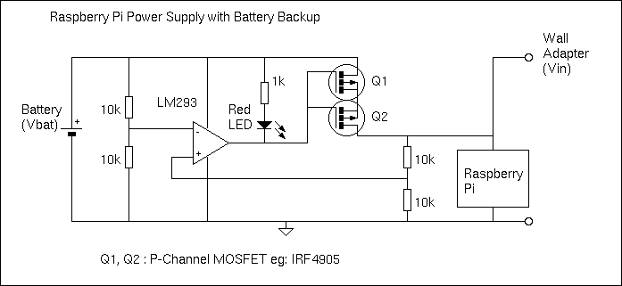

You are asking for help adding an LED indicator, but there are some other problems with your circuit. The Pi can become unstable when it is given less than 5.0 volts, and the 1N4007 diodes have a 0.8 or 0.9 volt drop. One solution is to use Schottky diodes such as the 1N5820 which have only a 0.3 volt drop.
An alternative to diodes that would provide better voltage for the Pi is this circuit:

Here a P-Channel MOSFET is used to connect the battery with the Pi when the main power supply drops. The comparator (LM293) compares the battery voltage with the main power voltage. When the main voltage drops below the battery voltage, the MOSFET is turned on and the LED is lit. The low on resistance of the IRF4905 ensures the voltage drop from the battery is below 0.1 volt when the MOSFET Vgs=-5V. The battery will power the Pi until the main voltage is restored, as the comparator will then turn off the MOSFET.
Edit: Some details.
There are some sources of error in the circuit that make it less than precise, but good enough for the purpose intended. The tolerance of the 10k resistors and the comparator offset voltage can slightly change the switching point. The 1k resistor is needed (not 220 ohm) as the LM293 cannot sink much current. The MOSFET Q1 must have a low resistance when Vgs is -5.0 volts (IRF7410 is an excellent choice but only available in surface mount). When Vbat and Vin are almost equal, noise due to variable Pi processing may cause the MOSFET to rapidly turn on and off. This may cause unwanted heat in the MOSFET. A capacitor on one of the voltage dividers will stop any rapid oscillations (but slow down the response to a declining Vin). Also, the circuit has been quickly designed and not simulated or tested...
Edit 3: A correction.
If the power supply Vin is more than 700 mV above Vbat, the integral reversed bias diode in the MOSFET will conduct and try to charge the battery from the power supply. This is probably not what you want. A Schottky diode in series with Q1 would prevent the reverse current, but this would defeat the purpose of the MOSFET! I applied the clever trick with back-to-back MOSFETs. By installing 2 MOSFETs with a common drain or common source, the body diode current leak is blocked. The pair will have twice the resistance (Rds on), but this is not important in this application.
{kind=link}
{kind=link}
{kind=link}
{kind=link}